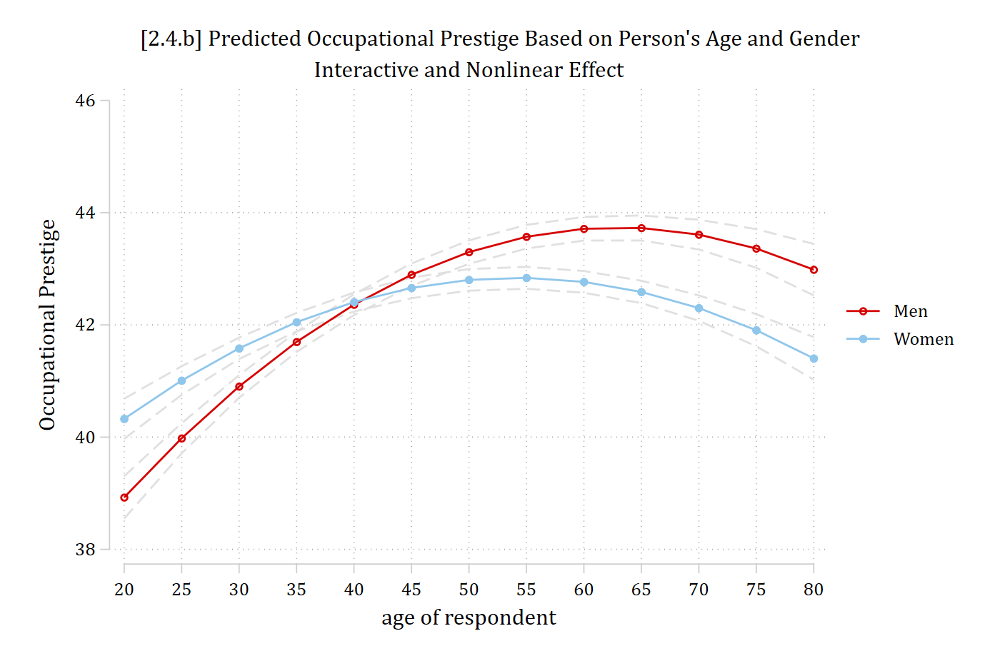
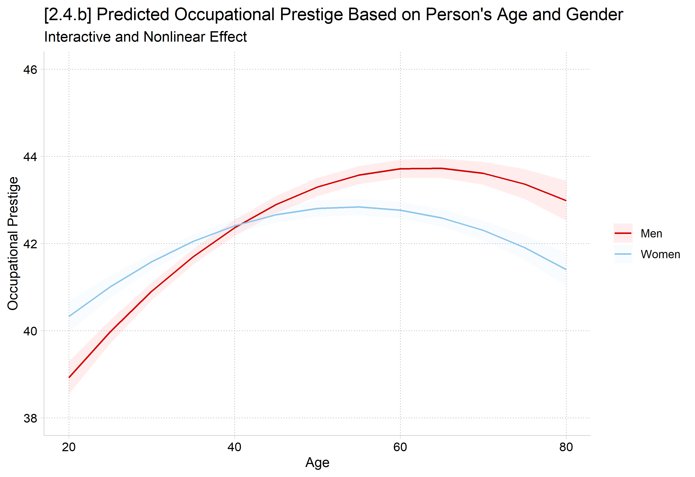
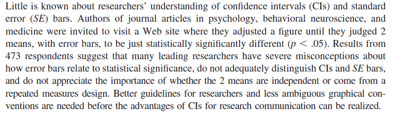
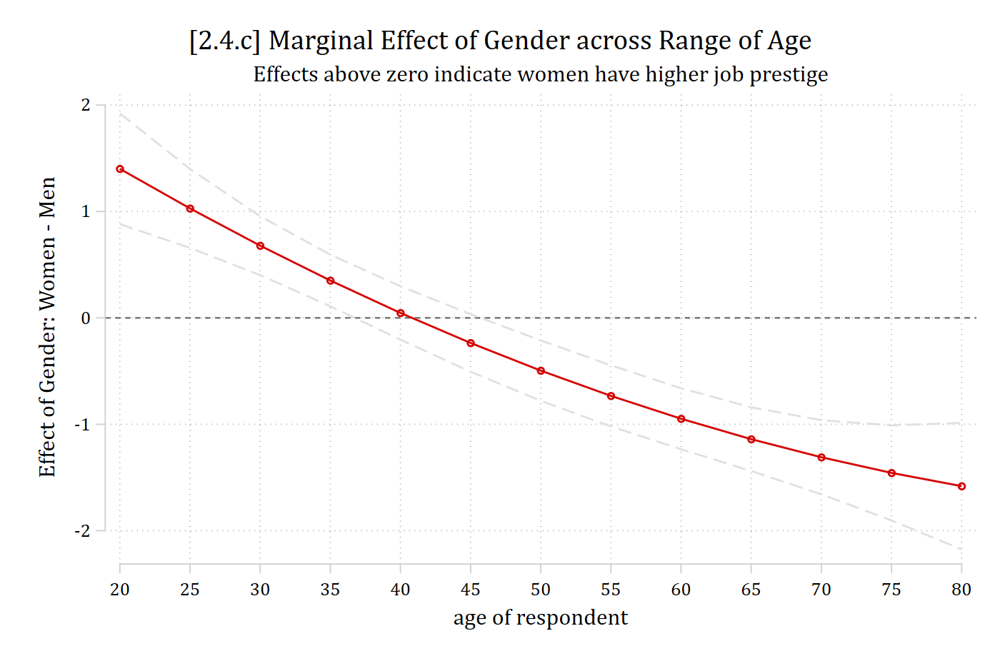
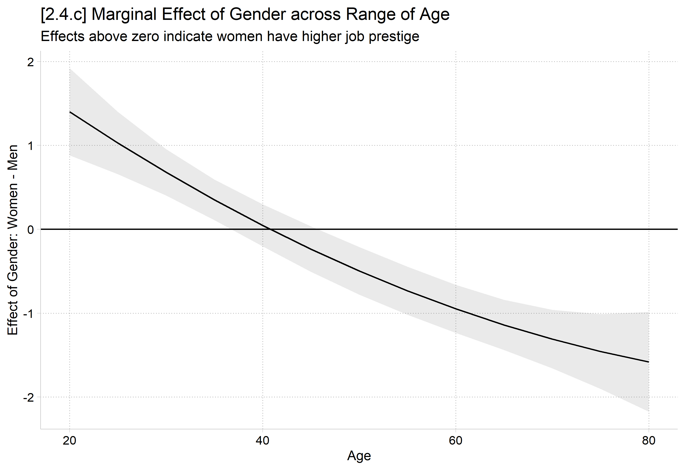
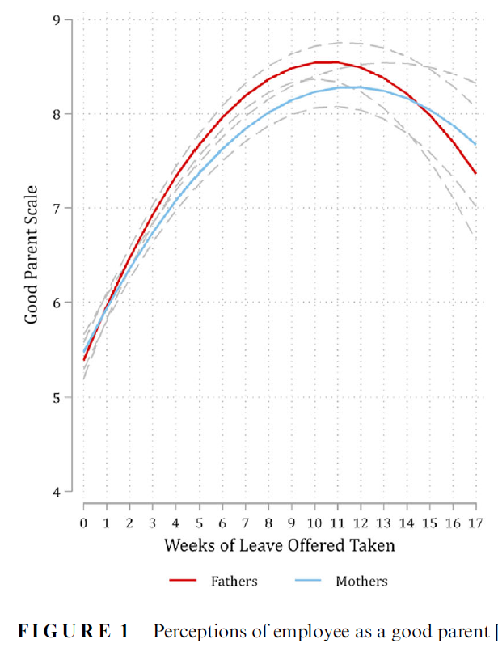
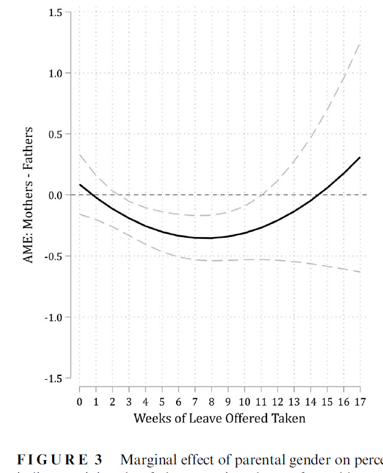

Things get complicated quickly when we combine interaction effects with nonlinearities
When we get to models for categorical DVs, these are inherently nonlinear and interactive
Linear regression models can be nonlinear and interactive
From the examples above, we already know that: (a) age has a nonlinear effect (age2 coefficient was significant), and that (b) age has a different effect for men and women (age X woman product term coefficient is significant)
Note (below) that to correctly model the nonlinear interaction effect you need five coefficients: age, age2, woman, woman*age, and woman*age2
All five coefficients are necessary to properly estimate the nonlinear interaction effect
[2.4.a] Occupational prestige linear regression model Nonlinear interaction
effects
---------------------------
Variable | opintnlmod
-------------+-------------
age | 0.328***
|
c.age#c.age | -0.003***
|
woman |
Women | 3.116***
|
woman#c.age |
Women | -0.095**
|
woman#c.age#|
c.age |
Women | 0.000
|
college |
College D.. | 16.216***
_cons | 29.749***
---------------------------
Legend: * p<.05; ** p<.01; *** p<.001
library(haven) # import Stata data and labelslibrary(dplyr) # data manipulationlibrary(ggplot2) # graphslibrary(modelsummary) # regression tableslibrary(marginaleffects) # predictions and marginal effectslibrary(cleanplots) # graph schemecleanplots_defaults()gss <-read_dta("https://tdmize.github.io/data/data/cda_gss.dta")# Keep only model vars and drop any missing data on themgss <- gss[c("occprest", "age", "woman", "college")]gss <- gss[complete.cases(gss), ]# Treat binary variables as factors using their value labelsgss <- gss |>mutate(woman =as_factor(woman), college =as_factor(college))int2mod <-lm(occprest ~poly(age, 2, raw =TRUE) * woman + college, data = gss)modelsummary(int2mod, stars =c("*"= .05, "**"= .01, "***"= .001),title ="[2.4.a] Occupational prestige linear regression model: Nonlinear interaction effects")
[2.4.a] Occupational prestige linear regression model: Nonlinear interaction effects
(1)
* p < 0.05, ** p < 0.01, *** p < 0.001
(Intercept)
29.749***
(0.568)
poly(age, 2, raw = TRUE)1
0.328***
(0.025)
poly(age, 2, raw = TRUE)2
-0.003***
(0.000)
womanWomen
3.116***
(0.774)
collegeCollege Degree
16.216***
(0.121)
poly(age, 2, raw = TRUE)1 × womanWomen
-0.095**
(0.033)
poly(age, 2, raw = TRUE)2 × womanWomen
0.000
(0.000)
Num.Obs.
58304
R2
0.247
R2 Adj.
0.247
AIC
456492.9
BIC
456564.7
Log.Lik.
-228238.463
F
3180.178
RMSE
12.13
I find the coefficients more or less useless in nonlinear interactive models.
Here, I would go straight to a plot of predictions (include CIs!). Based on what the plot shows, I would then use that to guide further investigation—specifically, what MEs are likely to be informative.
qui margins, at(age=(20(5)80) woman=(0 1))marginsplot, ///title("[2.4.b] Predicted Occupational Prestige Based on Person's Age and Gender", size(medium)) ///subtitle("Interactive and Nonlinear Effect") ///ytitle("Occupational Prestige") /// recastci(rline) ciopts(lpat(dash) col(gs14)) ylab(38(2)46)
Variables that uniquely identify margins: age woman

plot_predictions(int2mod, by =c("age", "woman"),newdata =datagrid(age =seq(20, 80, 5), woman = unique,grid_type ="counterfactual")) +scale_y_continuous(breaks =seq(38, 46, 2), limits =c(38, 46)) +labs(title ="[2.4.b] Predicted Occupational Prestige Based on Person's Age and Gender",subtitle ="Interactive and Nonlinear Effect",x ="Age", y ="Occupational Prestige")

Now, the effect of age depends both on the value of age considered and based on whether the prediction is for a man or a woman
Interpreting nonlinear interaction effects with MEs
It is best to provide examples and interpretations that best answer your research question
Let’s say we are writing an article on the transition into early adulthood, thus we are mainly interested in the effect of age for those in their twenties
Remember the effect will be different for men and women, so need to calculate an ME for men and an ME for women
Predicting: Linear prediction
Marginal effects (N_opintnlmod=58304)
| ME # Estimate SE P>|z|
---------------------------------+---------------------------------------
age + 10 (centered) |
opintnlmod | 1 1.471 0.139 0.000
# Effect of aging from 20 to 30, separately for men and womenavg_comparisons(int2mod, variables =list(age =c(20, 30)), by ="woman")
woman Estimate Std. Error z Pr(>|z|) S 2.5 % 97.5 %
Men 1.98 0.128 15.4 <0.001 176.2 1.73 2.23
Women 1.26 0.118 10.6 <0.001 85.0 1.02 1.49
Term: age
Type: response
Comparison: 30 - 20
A 10-year increase in age for 20-year-old men leads to about 2 points higher job prestige on average. For women, the same increase in age leads to about 1.26 points higher job prestige.
OR
On average, 30-year-old men are predicted to hold jobs that are about 2 points higher in job prestige than those held by 20-year-old men. 30-year-old women’s job prestige is higher than 20-year-old women’s by 1.26 points.
*See Appendix A2.5 for more on how to calculate these MEs
Equality of marginal effects: second differences
Sometimes (depending on pattern of nonlinearities), can still be interesting / useful to examine if the effect, on average, differs across groups
Does aging, on average, have a different effect for men and women?
The test of the equality of MEs (sometimes called 1st differences) is called a 2nd difference
Predicting: Linear prediction
Marginal effects (N_m1=58304)
| ME # Estimate SE P>|z|
---------------------------------+---------------------------------------
age + SD (centered) |
Men | 1 1.503 0.080 0.000
Women | 2 0.591 0.074 0.000
On average, a standard deviation increase in age for men is associated with a 1.50 point increase in occupational prestige. For women, aging shows a smaller, but still significant increase in job prestige (ME+SD | woman = 1 = 0.59; 2nd difference p < .001).
A caution about overlapping CIs
An important (and often overlooked) part of interaction effects is the marginal effect of the secondary variable. E.g., The interpretations above focus on the effect of age—gender is a secondary consideration. However, what about the effect of gender? There is an interesting story there too
Importantly, when confidence intervals do not overlap this indicates that the group difference (i.e., men vs women in our plot) is significant. When the confidence interval does overlap this may or may not indicate the group difference is non-significant*: you must test for this directly. AsBelia et al. (2005)gently put it:

*NOTE: These general rules are only true for independent non-overlapping samples. It is even more complicated with clustered data (e.g., multilevel or longitudinal data)
Visualizing significant group differences
Fortunately, there are fairly straightforward ways to calculate and visualize significance information for group differences
The first method I recommend is to calculate and then plot the marginal effect of the binary/nominal IV across the range of the continuous IV (here, the ME of gender across the range of age)
Go back to the last graph. What is the ME of gender? It is simply the gap between the red and blue lines. That shows you the difference between men and women at each age
qui margins, dydx(woman) at(age=(20(5)80))marginsplot, /// recastci(rline) ciopts(lpat(dash) col(gs14)) yline(0) ylab(-2(1)2) ///title("[2.4.c] Marginal Effect of Gender across Range of Age", size(medlarge)) ///subtitle("Effects above zero indicate women have higher job prestige") ///ytitle("Effect of Gender: Women - Men")
Variables that uniquely identify margins: age

plot_comparisons(int2mod, variables ="woman", by ="age",newdata =datagrid(age =seq(20, 80, 5), grid_type ="counterfactual")) +geom_hline(yintercept =0) +scale_y_continuous(breaks =seq(-2, 2, 1)) +labs(title ="[2.4.c] Marginal Effect of Gender across Range of Age",subtitle ="Effects above zero indicate women have higher job prestige",x ="Age", y ="Effect of Gender: Women - Men")

*This is a direct test of the effect of gender: whenever the confidence interval overlaps zero = no significant group difference (see interpretation below)
Example interpretation of the plot above
As Figure # shows, at younger ages, women have higher occupational prestige than men (from age 20 to about age 37). From ages 37 to 45, men and women have similar occupational prestige scores. A gender gap reappears after age 45; however, at these older ages, the gender gap reverses, with men having higher occupational prestige than do women.
To see at exactly what ages the group difference is or is not significant:
I would always include the plot of predictions in an article for a nonlinear interaction effect (figure 2.4.b above)
These are familiar to readers and easily understood
The graph of MEs (2.4.c above) is harder to understand, especially out of context
I usually present these second in my article; when possible, alongside the graph of predictions (see below)


*I like including both graphs in a single paper (often as separate panels) to help the reader follow what the second graph shows. Example from Petts, Kaufman, and Mize 2023
Example write-up of occupational prestige findings
Term Contrast Estimate Std. Error z Pr(>|z|) S 2.5 % 97.5 %
age (x + sd/2) - (x - sd/2) 1.009 0.0544 18.55 <0.001 252.8 0.902 1.1154
woman Women - Men -0.165 0.1010 -1.64 0.101 3.3 -0.363 0.0325
Type: response
overall average effects of age and gender
Overall, individuals tend to hold more prestigious jobs when they are older compared to when they were younger—but the relationship is nonlinear. On average, a standard deviation increase in age (about 17.2 years) is associated with a 1.01 increase in occupational prestige (p < 0.001). However, Figure # illustrates the nonlinearities: aging is associated with increased occupational prestige until the late 50s, but the effect then reverses, with aging associated with lower occupational prestige late in life. In addition to the nonlinear effect of age, there are important differences in the effect of age based on a person’s gender. Women have higher occupational prestige than men from age 20 to about 37, but the effect then reverses, with men having higher occupational prestige after the age of about 45. Overall, aging shows a stronger association for men than women (2nd diff p < .001).